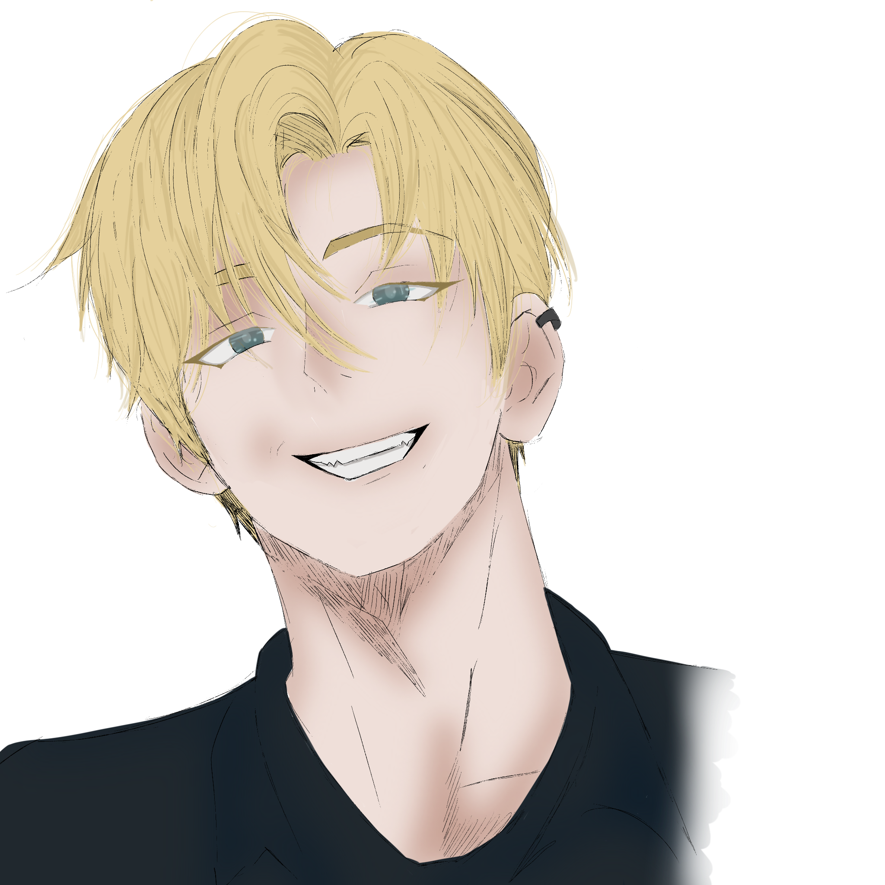

JASON OWNELL

Yaş: 26
Doğum Tarihi: 10.08.1997
Burç: Aslan
MBTI: ENTP
Bölüm: İşletme
Sınıf: Master
İlişki Durumu: Var - Marin
Köken: -
Kardeş: -
Saç Rengi: Sarı
Göz Rengi: Mavi
Boy: 1.84
Kilo: 88
Kan Grubu: 0-

- En sevdiği yemek cheeseburgerdir.
- En sevdiği hayvan aslandır.
- En sevdiği şarkı Jump Man - Drake.
- Favori rengi siyahtır.
- Futbol oynamayı çok sever.
- Mottosu: "Ne olursa olsun, yalnızlık bakidir."
- Vücudunu öne çıkaracak şekilde giyinir.
- Herhangi bir uzvunu kaybetmekten çok korkar.
- Herkesten gizli pokemon kartları topluyor.
- Enerji içeceğini ılık içer.
- Hayali zengin olmaktır.
- Evlilik veya çocuk istemiyor.
- Daha zeki olmak isterdi..
- Kendisini pek sevmiyoruz.